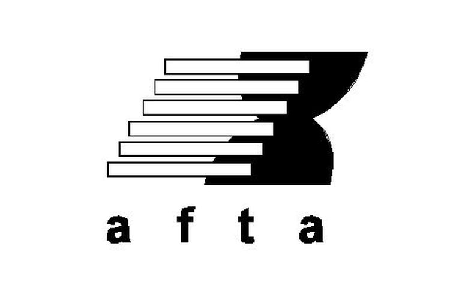

Kerjasama Multilateral, Regional, dan Bilateral
Pengertian Kerjasama Multilateral
Kerja sama yang dilakukan oleh dua negara atau lebih dengan lembaga internasional dan tidak terbatas wilayah.
Manfaat
Berikut ini adalah manfaat kerjasama multilateral :
Contoh Konkret
WTO adalah organisasi internasional yang memiliki tujuan untuk menciptakan perdagangan antarnegara menjadi semakin terbuka dengan pengurangan bahkan penghapusan hambatan dengan tarif maupun non tarif. WTO bertugas untuk menata dan memfasilitasi lalu lintas perdagangan antarnegara serta mengatasi perselisihan perdagangan antarnegara.
IMF adalah lembaga yang bertanggung jawab untuk membuat dan menjaga sistem moneter
internasional. Bertujuan untuk menyediakan keuangan berupa pinjaman kepada negara
anggotanya. IMF didirikan pada Juli 1944 dibawah naungan PBB. Indonesia tergabung dalam IMF
pada tanggal 15 April 1954 kemudian keluar dari IMF pada Mei 1945. Kemudian Indonesia
kembali menjadi anggota IMF pada 23 Februari 1967.

Adalah organisasi yang menangani masalah terutama bagi anak-anak yang mengalami penderitaan baik itu karena kemiskinan atau musibah yang menimpa. Bertujuan untuk menjaga keberlangsungan hidup anak dan membantu mereka tumbuh. Telah didirikan pada 11 Desember 1946 oleh PBB.

Adalah organisasi yang bertugas mengatasi masalah hak asasi manusia. Memiliki tugas dan
peranan untuk memeriksa, memantau, dan memberitahukan kepada publik tentang situasi hak
asasi manusia di suatu negara atau wilayah tertentu. UNHCR terdiri dari 53 negara anggota
yang dipilih oleh anggota ECOSOC.

Adalah organisasi yang bertugas memajukan kerjasama antarbangsa di bidang pendidikan,
pengetahuan, dan kebudayaan. Lembaga ini didirikan tahun 1945 dibawah naungan PBB.

Pengertian Kerjasama Regional
Kerjasama yang dilakukan oleh dua negara atau lebih yang berada di suatu kawasan yang sama atau daerah yang berdekatan.
Manfaat
Contoh Konkret
Merupakan wadah kerjasama ekonomi bagi negara-negara di kawasan Asia Pasifik.
Organisasi ini berdiri pada bulan November 1989 di Canberra, Australia. Terdiri
dari 21 negara anggota yang bertujuan untuk membangun investasi ekonomi,
memperluas perdagangan, mendorong adanya perdagangan bebas, dan sebagainya.

Merupakan wujud dari kesepakatan negara-negara ASEAN untuk membentuk suatu kawasan bebas perdagangan dengan tujuan untuk meningkatkan daya saing ekonomi di kawasan ASEAN. AFTA dibentuk pada saat KTT Asean ke-4 di Singapura pada 28 Januari 1992. 
Merupakan organisasi antar-pemerintahan yang didirikan untuk mendorong perdagangan bebas dan integrasi ekonomi untuk kepentingan negara-negara anggotanya. Awalnya organisasi ini terdiri dari 7 negara, kini negara anggota yang masih bertahan hanya 4 negara. Negara-negara EFTA telah mengembangkan salah satu jaringan Perjanjian Perdagangan Bebas (FTA) yang mencakup lebih dari 60 negara, termasuk Uni Eropa.
Pengertian Kerjasama Bilateral
Hubungan antar dua negara dengan tujuan saling menguntungkan kedua belah pihak. Kerjasama ini terbentuk karena pemerintah ingin meningkatkan kesejahteraan ekonomi negaranya. Saat ini, Indonesia telah menjalin kerjasama bilateral dengan 162 negara lainnya.
Manfaat
Contoh Konkret